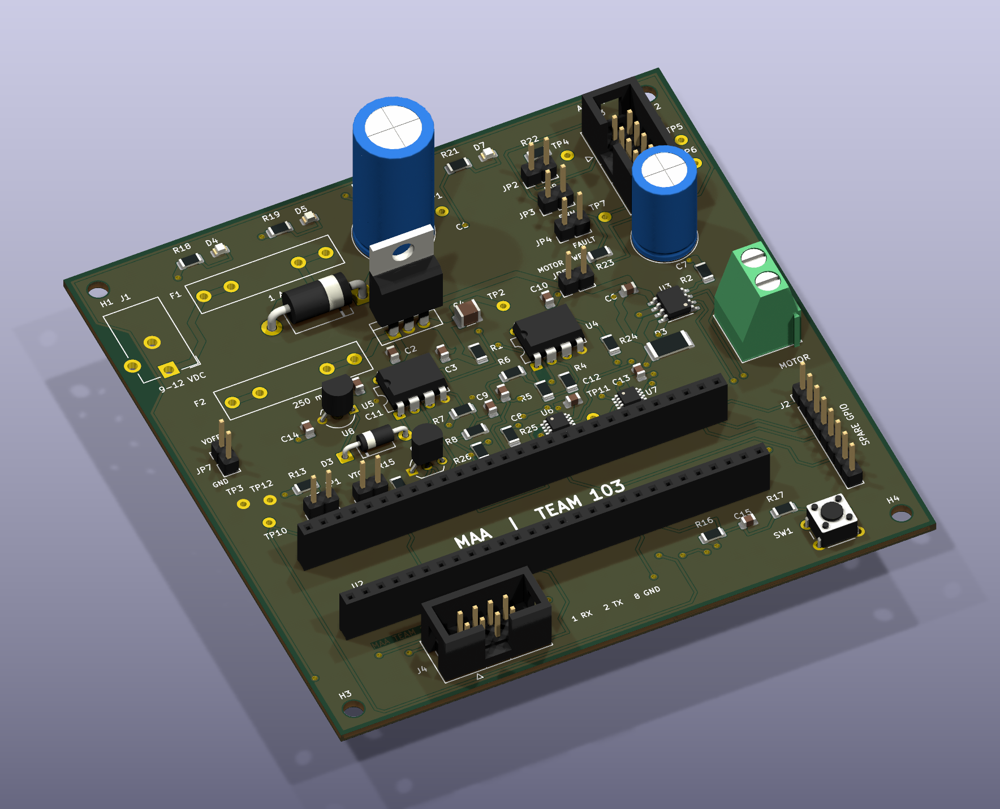
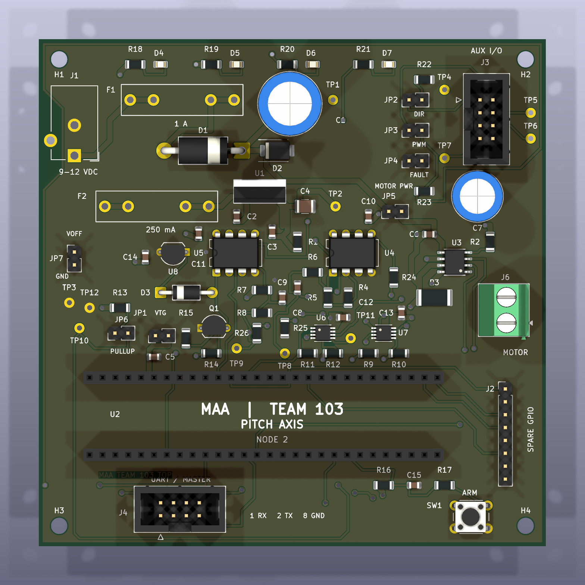
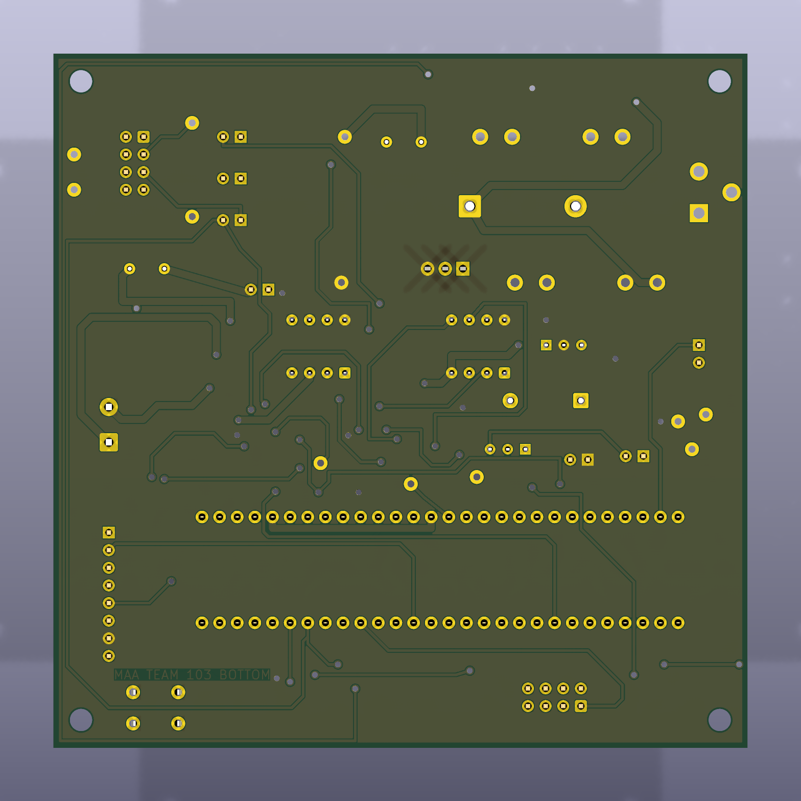

Team 103 · Node 2 · Revision 1.2
PCB Design
A two-layer pitch-axis controller with motor drive, current sensing, and a hardware fault latch.


Board specifications
| Property | Design |
|---|---|
| Size and stackup | 100 × 100 mm; 1.5 mm thick; two copper layers, 0.5 oz each |
| Routing | Manual routing; 40 mil power and ground tracks; 15 mil signal tracks |
| Copper zones | Front ground plane; rear +5 V plane |
| Mechanical | Four mounting holes; edge-accessible power, motor and ribbon connections |
| Controller and driver | PIC18F57Q43 Curiosity Nano (U2); DRV8871 H-bridge (U3) |
| Input | 9–12 V DC; fused power path; LM7805T provides 5 V |
| Capacitors | All nonpolar: bipolar C1/C7 and ceramic C2–C6/C8–C15 |
Assembly views




Layout and connections
| Area | Placement and purpose |
|---|---|
| Power and motor | J1, fuses, protection and U1 occupy the upper-left area. U3, C7 and J6 are grouped at the right motor connector. |
| Current sense | R3 feeds the U4 amplifier and filter. The driver return stays on the shunt side of R3 instead of being shorted directly to the ground plane. |
| Fault shutdown | The comparator, latch and gates are grouped between the driver and controller. JP2/JP3/JP4 are labelled DIR/PWM/FAULT. |
| Power jumpers | JP1 links 5 V to VTG. JP7 links VOFF to GND for the intended external supply setup. JP5 controls motor power and JP6 the fault pull-up. |
| UART / master | J4 carries both directions: pin 1 RX, pin 2 TX, pin 8 GND; pins 3–7 unused. Match these to the master's TX, RX and common ground before wiring. |
| Auxiliary I/O | J3 remains a separate auxiliary connector. Its harness is not interchangeable with J4. |
Fabrication drawings
The PDFs are KiCad 1:1 plots. Print at 100% scale and check the 100 mm board edge before fitting real parts.


Verification
KiCad's saved DRC reports 0 errors, 0 warnings, 0 unconnected items and 0 schematic-parity findings, with zones refilled and schematic comparison enabled. Schematic ERC reports 0 errors and 0 warnings. The reports record the configured ignored checks.
Actual DRC evidence · DRC report · ERC report · 1 A trace-width calculation
Before fabrication
JLCDFM analysis and the physical 1:1 component-fit check remain pending. U6/U7 have 0.65 mm pitch and 0.40 mm pads, below the Peralta package guidance, and require professor/Lab Manager review. Connor's main-board UART directions and the auxiliary harness still need confirmation.
The KiCad checks verify connectivity and the configured design rules; they do not establish bench operation or assembly approval.